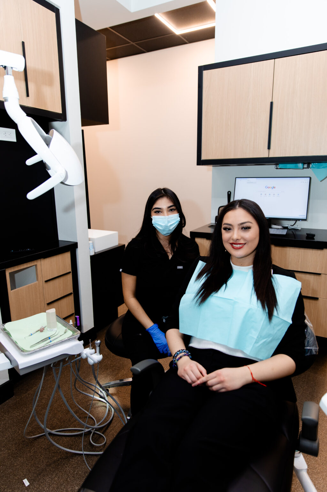
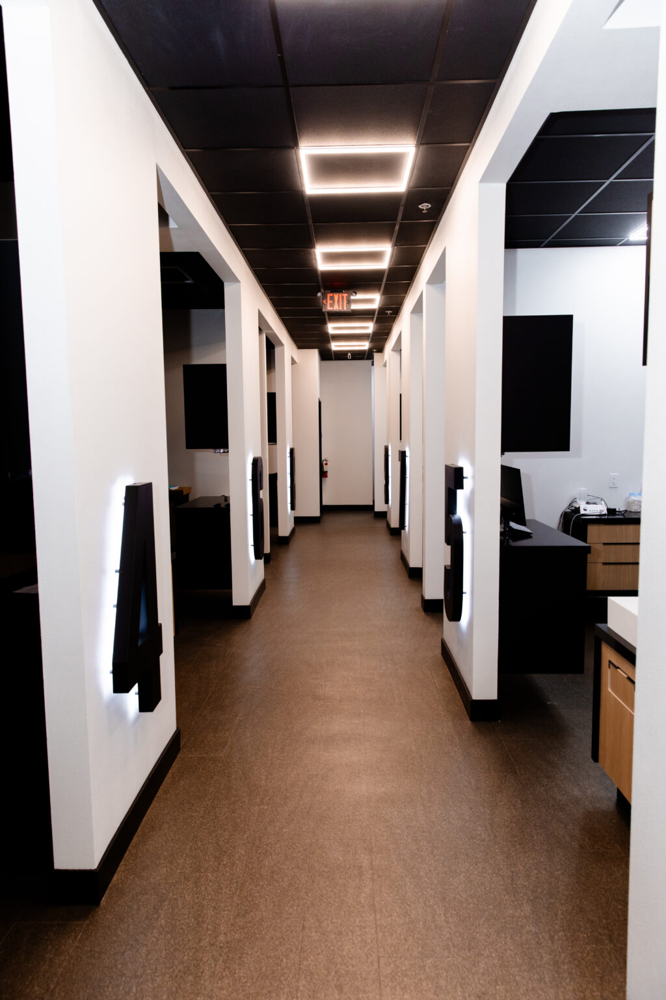
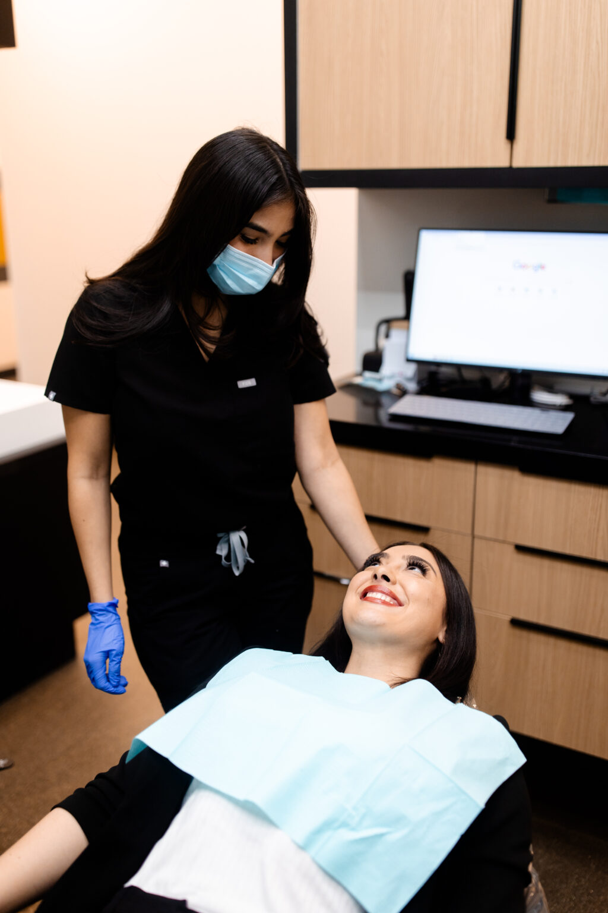
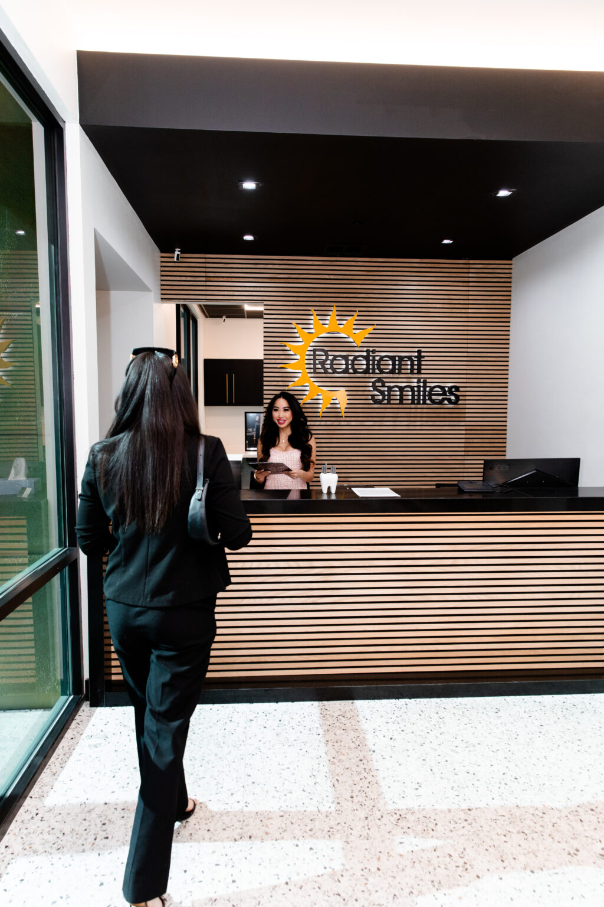

Chew on both sides again.
An implant is anchored in the jaw, so you are not steering food away from one side of your mouth.

A replacement tooth that stands on its own, with the surgical placement and the restoration both handled by our own team.
The teeth either side lean towards the gap. The tooth above or below it drifts down into the space.
Under the gap, the jawbone stops being loaded when you chew. Bone that is not loaded reduces over time. That is why a gap left alone narrows the options for filling it later.
None of this is an emergency, and that is exactly the problem. It is slow, so it waits. The waiting is what makes the eventual fix bigger.

The published coverage numbers belong here as well. The ADA Health Policy Institute reports that 55% of adults aged 65 and older have no dental benefits, fetched 30 July 2026. The same source reports that dental visits track coverage directly. In 2023, 53% of adults with private dental insurance had a dental visit, against 16% of adults with no dental insurance.
An implant is anchored in the jaw, so you are not steering food away from one side of your mouth.
A bridge is carried by the teeth either side of a gap. An implant stands on its own instead.
The crown on an implant is brushed and flossed where it sits. It does not come out at night.
Patients at our Lake Mead office have left 506 reviews on Birdeye, averaging 4.5 stars, fetched 30 July 2026.
That record belongs to that office alone.
X-rays and impressions are taken to determine the bone, the gum tissue and the spacing available for an implant. You are told what is seen, not handed a plan.
Our own bone grafting page publishes that a jawbone that has receded or been significantly damaged cannot support an implant. It publishes that grafting is usually recommended for the restoration, captured 30 July 2026.

A post, usually titanium, is placed in the jaw while the area is numb. This is surgery, and we describe it to you as surgery.

The post has to join with the bone before it can carry anything.
Our own implants page publishes a healing and integration period of up to six months, captured 30 July 2026.
That waiting period is part of the treatment, not a delay in it.
The artificial tooth is made and fitted to the post, our own implants page says. The same practice that placed the post fits the tooth on top.

An implant is checked at your regular visits like any other tooth. The practice that placed it is the practice that checks it.


The patient carries the plan between them. We do both, at seven offices across Las Vegas, North Las Vegas and Henderson.
We are one dental group, not a franchise and not a referral network. Where offices are separately owned, a consistent standard between them cannot be promised. Oral surgery and restorative care sit on one clinical roster here.
The clinicians on that roster are named, each with the credentials the practice publishes for them. You can read who they are before you book, on our team page.

If you are new to us, start with the $45 exam and X-ray, or $29 if you are a senior.
Both prices are published on our own site and were current on 30 July 2026.
We quote after an examination, because the plan depends on the bone, the site and the tooth being replaced. We do not publish treatment prices on this site.
Coverage depends on your plan. Delta Dental, Cigna, MetLife and the Culinary Health Fund are among the 41 carriers listed on our insurance and financing page. Network status varies by office and by plan. Contact the office you want with your plan details before you book.
The post is placed while the area is numb. The site can feel sore afterwards, and we tell you how to manage that before you leave.